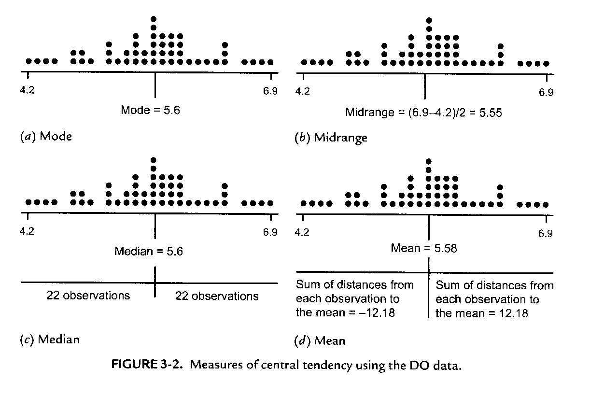
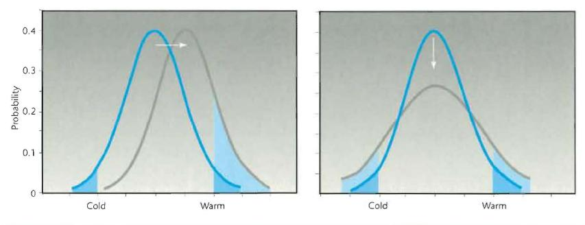
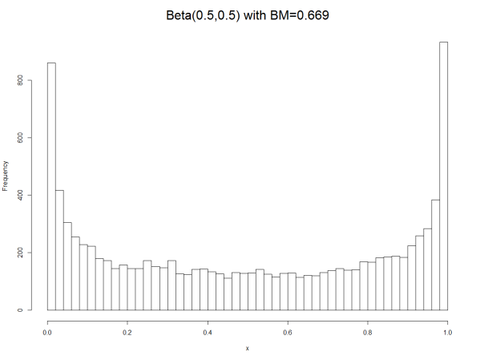
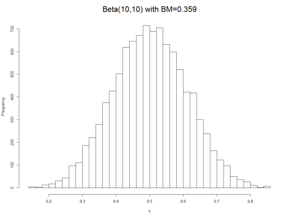
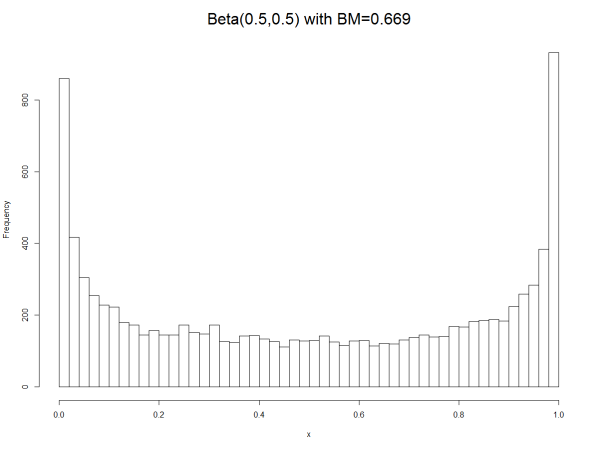
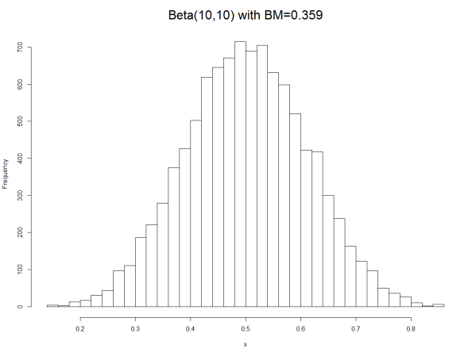

Chapter 03: Measures of Central Tendency and Variation
1 Measures of Central Tendency
The center of a distribution can be measured by several statistics: arithmetic mean, median, mode and others.
The center of a distribution provides us with the summary information about that location around which the data predominately vary. It can be considered as the most representative data value.
Each of the central tendency measures have advantages and disadvantages depending on properties of the underlying data distribution and the problem at hand.
In general, using just a locational summary measure for a full-fledged distribution of the sample is accompanied by substantial loss of information (e.g., shape of the distribution)
1.1 The Mid-Range
- For metric variables the value halfway point between \(x_{min}\) and \(x_{max}\):
\[x_{mid} = \frac{x_{max} + x_{min}}{2}\]
Does not work well for skewed distributions.
It depends on just two observations, which are also the most extreme ones. Therefore, it ignores all the other sample data.
It is highly influenced by sampling variability.
1.2 The Mode
The most frequently observed data value (or histogram bar mid-point) is described by the mode.
In essence, it is the value that has the highest likelihood of being observed in our data.
The mode is a valid statistic for categorical and metric variables.
The mode is influenced by the definition of the bins in a histogram.
For multi-modal distributions the definition needs to be modified:
- If several modes are in close vicinity of each other, then we pick a representative value from this ensemble of modes.
- For a small number of outstanding modes, we could report locations of all modes as a set of representative values.
- Recall, multimodality usually hints at the fact that distinct underlying mechanisms have generated a heterogeneous set of data.
1.3 The Median
The median is the middle number with 50% of the observations larger than the median and 50% of the observations less than the median.
The median is only valid for metric data.
The median is closely related to the order statistic. Data in the order statistic are sorted ascending.
1.3.1 Odd Number of Sample Observations \(n\)
\[x_{[1]}, x_{[2]}, \ldots, \underbrace{x_{\left[\frac{N+1}{2} - 1\right]}}_{50\% \text{ observations} \leq x_{\left[\frac{N+1}{2}\right]}}, \overbrace{x_{\left[\frac{N+1}{2}\right]}}^{Median}, \underbrace{x_{\left[\frac{N+1}{2} + 1\right]}, \ldots, x_{[N-1]}, x_{[N]}}_{50\% \text{ observations} \geq x_{\left[\frac{N+1}{2}\right]}}\]
1.3.2 Even Number of Observations \(N\)
\[x_{[1]}, x_{[2]}, \ldots, \underbrace{x_{\left[\frac{N}{2}\right]}}_{50\% \text{ observations} \leq x_{\left[\frac{N}{2}\right]}}, \overbrace{\frac{x_{\left[\frac{N}{2}\right]} + x_{\left[\frac{N}{2} + 1\right]}}{2}}^{Artificial\ Median}, \underbrace{x_{\left[\frac{N}{2} + 1\right]}, \ldots, x_{[N-1]}, x_{[N]}}_{50\% \text{ observations} \geq x_{\left[\frac{N}{2} + 1\right]}}\]
Some software packages offer alternative definitions for the mid-point of an order sequence of data values. Recall the
quantile()function in R.The median is also called the 50% quantile, i.e., second quartile.
1.3.3 Optimality Property of the Median
The median minimizes the absolute distances to all data values:
\[\sum_{i=1}^{n} |x_i - X_{median}| < \sum_{i=1}^{n} |x_i - \theta| \quad \text{for any } \theta \neq X_{median}\]
with \(|x_i - X_{median}| \equiv \sqrt{(x_i - X_{median})^2}\)
This can be used to find, for instance, the optimal location (on a line) to which the overall distance is the smallest (see Euclidian median definition in BBR, p. 136)
1.4 The Arithmetic Mean
The arithmetic mean is commonly known as just the mean.
This statistic denoted by \(\bar{X}\) and calculated by:
\[\bar{X} = \frac{1}{n} \cdot \sum_{i=1}^{n} x_i\]
where \(n\) is the number of sample observations.
The mean is only valid for metric data.
Assume that we place the data at their proper location on a scale. Data points have identical weights. Then the mean is the pivot point where the scale is in balance (center of gravity):

FIGURE 3-2. Measures of central tendency using the DO data.
1.4.1 Properties of the Mean
- Zero-sum property: The sum of the differences around the mean is zero:
\[\sum_{i=1}^{n} (x_i - \bar{X}) = 0\]
To see this property note:
\[\sum_{i=1}^{n} (x_i - \bar{X}) = \sum_{i=1}^{n} x_i - n \cdot \bar{X} = \sum_{i=1}^{n} x_i - n \cdot \frac{\sum_{i=1}^{n} x_i}{n} = 0\]
Therefore, it is the center of gravity of the data, i.e., the pivot at which the scale is balanced.
Loss of degrees of freedom: A consequence of the zero-sum property is that once the mean has been calculated from the sample observations only \(n - 1\) observations can vary freely (loss of one degree of freedom).
Minimum squared deviations: The squared deviations of the data around the mean is smaller than for any other central tendency statistic (see the math review and animation
OUTLIERANIMATION.MP4):
\[\sum_{i=1}^{n} (x_i - \bar{X})^2 < \sum_{i=1}^{n} (x_i - \theta)^2 \quad \text{for any } \theta \neq \bar{X}\]
See the R-script OptimizeMeanMedian.R to see the minimizing properties of both the mean and median.
1.5 Comparison of Properties of Measures of Central Tendency
- If a metric distribution is both symmetric and uni-modal, then the mode, median and mean are all identical.
This property can be used to test for skewness:
- For positively skewed uni-modal distributions: \(x_{mode} < x_{median} < \bar{x}\)
- For negatively skewed uni-modal distributions: \(\bar{x} < x_{median} < x_{mode}\)
1.5.1 Advantages of the Mode
- Easy to calculate
- Can be used for categorical data
1.5.2 Disadvantages of the Mode
- The mode may not be representative for the central tendency in the data if it is located in one tail.
- For multimodal data its definition is somewhat arbitrary, and all relevant peaks should be reported
1.5.3 Advantages of the Median
- Unaffected by extreme observation or skewed data distributions. It is more informative in these cases than the mean. Therefore, you frequently find the median in reports.
- Fixed distance units of the measurement scale are not required.
1.5.4 Disadvantages of the Median
- Not as stable from sample to sample because it depends on just one data value (for odd sample sizes) or two data values (for even sample sizes).
- Has disadvantages in mathematical derivations because it is based on an optimization function with a discontinuous pole.
- Computationally it requires that the data are first sorted first, which takes extra time.
1.5.5 Advantages of the Mean
- Easy to calculate with several useful properties in mathematical statistics.
- Relates well to many parameters of underlying theoretical population distributions.
- It provides a stable estimate from sample to sample
1.5.6 Disadvantages of the Mean
- Sensitive to skewed distributions and outliers
1.6 Weighted Mean
- The weighted mean is used for data which are first aggregated into \(G\) homogenous groups. Each representative group value \(x_g\) has a weight \(w_g \geq 0\) equal to the size of the group:
\[\bar{x}_{weig} = \frac{1}{\sum_{g=1}^{G} w_g} \cdot \sum_{g=1}^{G} w_g \cdot x_g\]
- The arithmetic mean is a special case of the weighted mean by setting \(w_g = 1\) and \(G = n\).
1.7 Trimmed Mean and Winsorized Mean
The trimmed mean discards an equal proportion of data (say 5%, 10%, or 20%) from both tails of the distribution. Subsequently, the mean is calculated from the remaining observations.
If \(x_{[1]} \leq x_{[2]} \leq \cdots \leq x_{[n]}\) represents the ordered sample values, then the trimmed mean is given by:
\[\bar{x}_{\tau} = \frac{1}{n - 2 \cdot k} \cdot \sum_{i=k+1}^{n-k} x_{[i]}\]
where \(k\) is the smallest integer greater than or equal to \(n \cdot \tau\) with \(0 \leq \tau \leq 0.5\).
1.7.1 Advantages of the Trimmed Mean
- It becomes robust against the effects of outliers and skewed distribution while still focusing on the most representative data point.
- For \(\tau = 0\) we get the arithmetic mean \(\bar{x}\) and for \(\tau \cong 0.5\) we get the median \(x_{median}\).
1.7.2 Disadvantages of the Trimmed Mean
- We disregard a certain percentage of observation from both tails of our sample and, therefore, loses information.
- The data must be sorted to calculate the trimmed mean.
- There are no fixed rules on how many observations we would need to trim away from either end of the distribution. Therefore, it is important to first visually inspect the distribution and to experiment with different \(\tau\) values.
1.7.3 Winsorized Mean
Like the trimmed mean, however, each of the smallest dropped observations are replaced by \(x_{[k+1]}\) and vice versa for the largest dropped observations by \(x_{[n-k]}\):
\[\bar{x}_{\tau}^{W} = \frac{1}{n} \cdot \left( k \cdot (x_{[k+1]} + x_{[n-k]}) + \sum_{i=k+1}^{n-k} x_{[i]} \right)\]
This has the advantage that the sample size is not reduced. The winsorized mean is calculated with the trim option in the R function mean(x, trim = 0, na.rm = FALSE).
1.7.4 Example for Trimming and Winsorizing with \(\tau = 0.2\)
| Rank | 1 | 2 | 3 | 4 | 5 | 6 | 7 | 8 | 9 | 10 |
|---|---|---|---|---|---|---|---|---|---|---|
| Observations | 12 | 14 | 15 | 17 | 20 | 21 | 23 | 24 | 27 | 29 |
| Trimmed | – | – | 15 | 17 | 20 | 21 | 23 | 24 | – | – |
| Winsorized | 15 | 15 | 15 | 17 | 20 | 21 | 23 | 24 | 24 | 24 |
1.8 The Geometric Mean
- The average rate of change \(r_i\) per time period is calculated over several successive time period change rates as the geometric mean:
\[\bar{r} = \sqrt[n]{r_1 \cdot r_2 \cdot \cdots \cdot r_n} = \left( \prod_{i=1}^{n} r_i \right)^{\frac{1}{n}} = \exp\left( \frac{\sum_{i=1}^{n} \ln(r_i)}{n} \right)\]
Note, all rates must be positive, i.e., \(r_i > 0\) where \(r_i = y_i / y_{i-1}\).
1.8.1 Example: Savings Account with Variable Interest
| Account Beginning of Year | Account End of Year | Annual Growth Rate |
|---|---|---|
| $ 100 | $ 115 | \(\frac{115}{100} = 1.15\%\) |
| $ 115 | $ 110 | \(\frac{110}{115} \cong 0.96\%\) |
| $ 110 | $ 120 | \(\frac{120}{110} \cong 1.09\%\) |
The average annual growth rate is:
\[\sqrt[3]{\frac{120}{100}} \cong 1.063\% \quad \text{or} \quad \sqrt[3]{1.15\% \cdot 0.96\% \cdot 1.09\%} \cong 1.063\%\]
1.9 The Harmonic Mean
The harmonic mean is used to calculate the average for ratio variables with a fixed common denominator, that is, \(x_i\) miles/one hour or \(x_i\) miles/one gallon, where each measured value refers to the same distance segment travelled.
The harmonic mean is:
\[\bar{x}_{harm} = \frac{n}{\sum_{i=1}^{n} \frac{1}{x_i}}\]
1.9.1 Examples
[a] If a vehicle travels the first distance at \(60\) miles/h and an identical second distance at \(40\) miles/h, then it would have covered both equal distances on average at:
\[\frac{2}{\frac{1}{60} + \frac{1}{40}} = 48 \text{ miles/h}\]
[b] On the other hand, if a vehicle would have travelled two equal time intervals at \(60\) miles/h and at \(40\) miles/h, respectively, then the average speed of \(50\) miles/h would have covered the same distance.
2 Measures of Variability
2.1 Introduction
The central tendency gives us information about the approximate location of a distribution. However, it does not provide any information about its spread.
All measures of spread discussed here assume that we have a variable on the metric measurement scale.
The spread (also called dispersion or variability) is the degree to which all individual data points are jointly distributed around the central tendency. It provides an additional summary measure of the underlying distribution of our data.
The spread can range from anywhere between highly clustered around the central tendency to extremely dispersed around the central tendency.
The smaller the spread the more representative the central tendency is for observed data points.
Small spread translated into high accuracy as long as the central tendency is unbiased (lacks a systematic error). Recall BBR pp. 29-31. In Bayesian statistics reference is frequently made to precision which is simply the inverse to the spread:
\[precision = \frac{1}{variance}\]
2.1.1 Climate Change Example
The climate change debate is not only concerned with an overall increase in temperature, but also apprehensive about an increase in the variability of the temperature. This implies that a small shift in temperature in combination with a higher variability will increase the risk for extreme weather events:

2.2 Overall Range
- The range just depends just on the two most extreme observations:
\[\text{range}(X) = \max(X) - \min(x) = x_{[n]} - x_{[1]}\]
- It is, therefore, highly sensitive to sample variations and outliers.
2.3 Interquartile Range
To calculate the interquartile range, 25% of the observations at the bottom and the top of a distribution are discarded.
The range of the remaining 50% of the inner observations defines the interquartile range:
\[IQR = x_{[75\%]} - x_{[25\%]}\]
- Trimming away 25% of the data in each of the distribution’s tails may discard much information and, therefore, may not represent the variability well. It has been suggested to work with statistics with less than 25% trim.
2.4 Variation around the Mean: Variance and Standard Deviation

FIGURE 2.29 Diagrammatic representation of the calculation of mean and variance from five observations. Mean X is calculated from all five observations. Variance is calculated from differences between observations and the mean. When four differences have been found, the fifth difference is known.
2.4.1 Population Perspective
If we would have all \(N\) observations from an underlying population of a random variable \(X\) with the population mean \(\mu_X\) then the population variance \(\sigma_X^2\) is calculated by:
\[\sigma_X^2 = \frac{1}{N} \cdot \sum_{i=1}^{N} (x_i - \mu)^2\]
2.4.2 Sample Perspective
In contrast, for a given sample with an estimated mean \(\bar{x}\) and \(n\) sample observations the estimated variance \(s_X^2\) is calculated by:
\[s_X^2 = \frac{1}{n-1} \cdot \sum_{i=1}^{n} (x_i - \bar{x})^2\]
Note the use of \(n - 1\) in the denominator and the estimated mean \(\bar{x}\) in the squared deviations.
2.4.3 Degrees of Freedom
Once we know the mean \(\bar{x}\) and \(n - 1\) observations, the last observation can be calculated due to the zero-sum restriction:
\[x_n = \sum_{i=1}^{n-1} x_i - n \cdot \bar{x}\]
This is known as a loss of degrees of freedom.
2.4.4 Standard Deviation
The measurement unit of the variance is in terms of squared units of the original variable \(X\). Squared units are difficult to interpret; therefore, by taking the square root of the variance we get a measurement unit that matches that of our original variable.
The square root of the variance is called standard deviation:
\[\sigma_X = \sqrt{\sigma_X^2} \text{ for the population and } s_X = \sqrt{s_X^2} \text{ for the sample, respectively.}\]
2.4.5 The 2/3 Rule

For approximately symmetric distributions with a noticeable tendency to cluster around their mean, roughly \(2/3\) of the observations will be not more than one standard deviation to the left and right away from the mean.
However, this rule of thumb will not hold for highly skewed distributions or multimodal distributions.
2.5 Variation around the Mean: Mean Absolute Deviation
Recall, we have seen for the mean that \(\sum_{i=1}^{n} (x_i - \bar{x}) = 0\).
Consequently, positive and negative variations around the mean cancel out.
To overcome this problem the mean of absolute differences could be used:
\[MAD = \frac{1}{n} \cdot \sum_{i=1}^{n} |x_i - \bar{x}|\]
\(MAD\) is in the same measurement unit as the original variable \(X\).
Remember, if the median \(x_{median}\) is used instead of the mean \(\bar{x}\) then \(\sum_{i=1}^{n} |x_i - x_{median}|\) minimizes the sum of the absolute distances between all \(x_i\)s and the median.
2.6 Properties of the Mean and Variance Estimation Rules
Estimation rules are briefly called estimators in the statistical literature.
The sample mean \(\bar{x}\) is an estimator for the population mean \(\mu\) and the sample variance \(s_X^2\) is an estimator for the population variance \(\sigma_X^2\).
An estimator preferably should satisfy specific criteria:
- Unbiased: On average over many different samples from the same population, estimation rule should give values equal to their associated true population parameter.
- Efficient: Average deviation of a sample estimator around the true population parameter should be as small as possible (will be addressed in a later chapter).
The concept of biasedness is somewhat academic because, in order to assess a potential bias of an estimator, we would need to know the true population parameter.
However, one can show with mathematical arguments that some estimation rules will lead to biased estimates, whereas another estimation rule will not be biased.
2.6.1 Expected Value and Bias
The average of an estimator over many different independent samples of the same length from a population is called in statistical terms the expected value \(E[\cdot]\).
The expected value for the estimation rule \(\frac{\sum_{i=1}^{n} (x_i - \bar{x})^2}{n}\) for the spread is:
\[E\left[ \frac{\sum_{i=1}^{n} (x_i - \bar{x})^2}{n} \right] = \underbrace{\frac{(n-1)}{n}}_{< 1} \cdot \sigma_X^2 \quad \text{whereas} \quad E\left[ \frac{\sum_{i=1}^{n} (x_i - \bar{x})^2}{n-1} \right] = \sigma_X^2\]
Therefore, \(\frac{1}{n-1} \cdot \sum_{i=1}^{n} (x_i - \bar{x})^2\) is an unbiased estimation rule for \(\sigma_X^2\) whereas \(\frac{1}{n} \cdot \sum_{i=1}^{n} (x_i - \bar{x})^2\) slightly under-estimates the variance.
2.6.2 Heuristic Explanations for Using \(n-1\)
(i) Because the estimator \(\bar{x}\) minimizes the sum of the squared deviations, that is, \(\min_{\theta} \sum_{i=1}^{n} (x_i - \theta)^2\), for the sample observations, we always have:
\[\sum_{i=1}^{n} (x_i - \bar{x})^2 \leq \sum_{i=1}^{n} (x_i - \mu_X)^2\]
(compared to the true population expectation \(\mu_X\)).
To correct for this shrinkage in the numerator of the sample variance estimator, the denominator must also be slightly reduced from \(n\) to \(n - 1\) in order to avoid an under-estimation of the variance.
(ii) Due to zero-sum restriction in \(\sum_{i=1}^{n} (x_i - \bar{x}) = 0\) one observation cannot vary freely anymore. We therefore lose one degree of freedom.
- For a large number of sample observations the bias becomes negligibly small because \(n \approx n - 1\) and therefore \(\lim_{n \to \infty} \frac{n-1}{n} \approx 1\).
2.7 Problem of the Trimmed Variance Estimator
While the trimmed mean \(\bar{x}_{\tau}\) and the winsorized mean \(\bar{x}_{\tau}^{W}\) will not differ much, the trimmed variance substantially underestimates the spread, because it ignores any tail observations.
A winsorized statistic, however, accounts for the number of dropped observations at the bottom and the top of the distribution by padding the trimmed dataset with the smallest and largest remaining observations in the sample.
The padding with smallest and largest feasible values in the winsorized variance adjusts for this underestimation by including valid but extreme observations.
2.8 Other Measures of Spread and Shape of Distributions
2.8.1 Skewness (Third Moment Measure)
A measure for the skewness is:
\[\text{skew}(X) = \frac{\sum_{i=1}^{n} (x_i - \bar{x})^3}{\left( \sum_{i=1}^{n} (x_i - \bar{x})^2 \right)^{\frac{3}{2}}}\]
which is zero for symmetric distributions and positive or negative for positively or negatively skewed distributions, respectively.
Underlying structure of the equation:
- The third power (and any odd power) in the numerator preserves the sign of the deviation around the mean. Therefore, the sign of overall sum determines the direction of skewness.
- Outlying observations substantially inflate the numerator due to the third power.
- The denominator expression \(\left( \sum_{i=1}^{n} (x_i - \bar{x})^2 \right)^{\frac{3}{2}}\) standardizes the numerator so that the skewness estimator becomes independent of the variance. In essence, this is the numerator of the variance estimator taken to the power of \(3/2\).
Alternative measure: Pearson’s \(\gamma = \frac{3 \cdot (\bar{x} - x_{median})}{s}\)
2.8.2 Kurtosis (Fourth Moment Measure)
A measure for the kurtosis is:
\[\text{kurt}(X) = \frac{\sum_{i=1}^{n} (x_i - \bar{x})^4}{\left( \sum_{i=1}^{n} (x_i - \bar{x})^2 \right)^{\frac{4}{2}}} - 3\]
It follows the same construction principle as the skewness, however, it uses the fourth power.
Properties:
- In order to make the kurtosis for the normal distribution, which is used frequently as reference distribution, equal to zero the value 3 is subtracted.
- For an even power of 4 all deviations around the mean are always positive.
- Compared to a normal distribution:
- If a distribution has more mass in the tails than in the center, then the kurtosis becomes larger than 0
- If it has more mass in the center relative to the tails, then it becomes less than 0
- The denominator \(\left( \sum_{i=1}^{n} (x_i - \bar{x})^2 \right)^{\frac{4}{2}}\) again standardizes the numerator, however, now the power \(4/2\) is used.
- The kurtosis becomes difficult to interpret for skewed distributions, because one tail of the distribution is long whereas the other is short.
Note: There are different software implementations for the skewness and kurtosis estimators. See the online help for the functions
e1071::skewness()ande1071::kurtosis()in the librarye1071and their options.
2.9 The Bimodality Index
- The bimodality index is defined as:
\[BM = \frac{(\text{skewness}^2 + 1)}{\text{kurtosis} + \frac{3 \cdot (n-1)^2}{(n-2) \cdot (n-3)}}\]
This is implemented in the user-specified function
BiModalityIndex()in the R-codeChapter03SampleCode.r.It works best for nearly symmetric but potentially multimodal distributions.
- For a uniform distribution its value is \(\approx 0.55\)
- For bimodal or multimodal distributions this index will be larger than 0.55
- For a unimodal distribution this index is less than 0.55
2.9.1 Examples Using a Beta-Distribution
  
 
2.10 Coefficient of Variation
Variation relative to the mean:
If two distributions have different means and a positive support (all observations \(x_i\) must be for theoretical reasons \(x_i \geq 0\)) then their standard deviations may not be directly comparable:
- A larger mean allows for more spread toward the zero-origin point of the distribution.
- To adjust for the induced potential extra variability, the coefficient of variation is used:
\[CV = \frac{s}{\bar{x}} \quad \forall x_i \geq 0\]
3 Summary
| Measure | Formula | Best Used For |
|---|---|---|
| Mid-Range | \(\frac{x_{max} + x_{min}}{2}\) | Quick estimate, symmetric data |
| Mode | Most frequent value | Categorical data, multimodal detection |
| Median | Middle value (50th percentile) | Skewed data, outlier resistance |
| Mean | \(\frac{1}{n} \sum x_i\) | Symmetric data, mathematical properties |
| Variance | \(\frac{1}{n-1} \sum (x_i - \bar{x})^2\) | Spread measurement |
| Standard Deviation | \(\sqrt{s^2}\) | Same units as original data |
| IQR | \(Q_3 - Q_1\) | Robust spread measure |
| CV | \(\frac{s}{\bar{x}}\) | Comparing variability across different means |